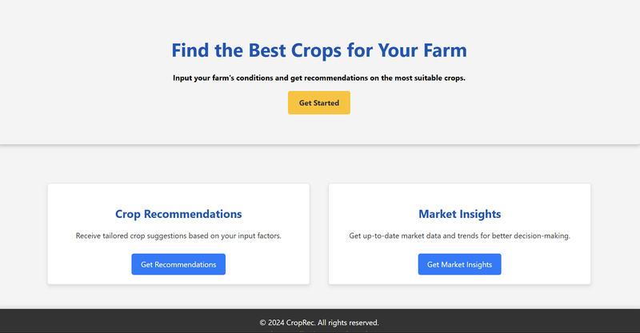

ML & AI
Python
Crop Recommendation System
Built a Crop Recommendation System using machine learning to suggest the most suitable crops based on soil, weather, and location data. The system empowers farmers with data-driven decisions to improve yield and profitability.